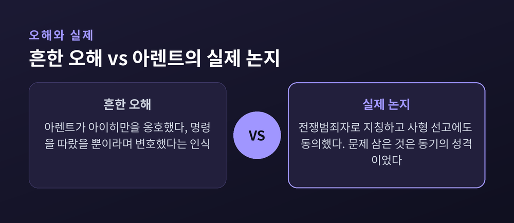
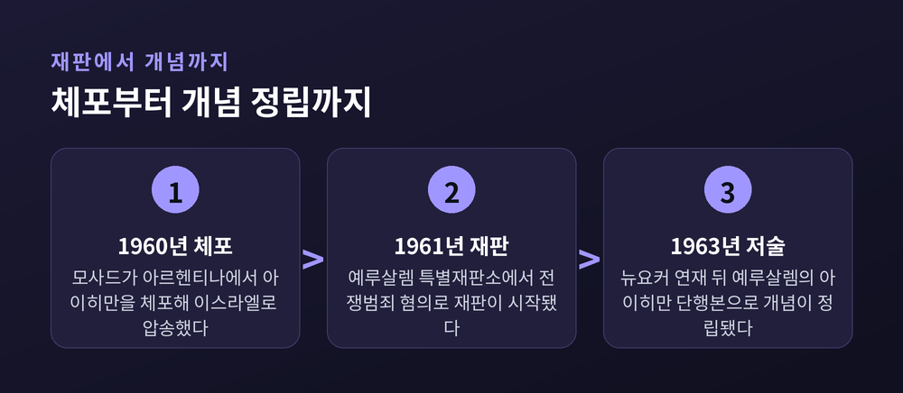

오늘은 한나 아렌트의 "악의 평범성"이라는 개념을 두고, 그 출발점이 된 아이히만 재판부터 오늘날까지 이어지는 논쟁까지 정리해 보려 합니다. 유명한 만큼 오해도 많이 따라붙은 개념입니다. 이번 글에서는 그 원래 맥락과 실제 논지, 그리고 이에 대한 반론까지 함께 살펴보겠습니다.
1960년 5월, 이스라엘 정보기관 모사드는 아르헨티나에 숨어 살던 나치 친위대 장교 아돌프 아이히만을 체포했습니다.
그는 유대인을 각지 강제수용소로 이송하는 실무를 총괄했던 인물입니다. 종전 후 가짜 이름으로 신분을 숨긴 채 약 10년을 도피 생활로 보냈습니다.
이듬해인 1961년 4월 11일, 예루살렘 지방법원 특별재판소에서 재판이 시작됩니다. 전쟁범죄와 인도에 반한 죄가 그의 혐의였습니다.
이 재판을 취재하러 간 것이 정치철학자 한나 아렌트입니다. 유대계 독일 이민자였던 그는 잡지 『뉴요커』의 요청으로 법정에 앉았습니다.
취재 내용은 1963년 『뉴요커』에 먼저 연재됐고, 같은 해 단행본 『예루살렘의 아이히만: 악의 평범성에 관한 보고서』로 묶여 나왔습니다. 재판은 유죄로 끝났고, 아이히만은 1962년 6월 처형됐습니다. 이스라엘이 사형을 집행한 유일한 사례로 남아 있습니다.
아렌트가 법정에서 마주한 아이히만은 예상과 달랐습니다.
사디스트도, 광신적 이념가도 아니었습니다. 그의 표현을 빌리면 아이히만은 "왜곡되지도 가학적이지도 않았"고, 오히려 "섬뜩할 만큼 정상적"이었습니다.
아렌트가 주목한 지점은 하나입니다. 아이히만이 오직 자신의 관료적 경력에만 관심이 있는, 지극히 평범한 공무원처럼 보였다는 사실입니다.
그는 이 특징을 "악의 평범성"이라 이름 붙였습니다. 핵심 주장은 이렇습니다. 극단적인 잘못이 반드시 괴물 같은 의도에서만 나오는 것은 아니라는 것입니다. 사려 없는 순응에서도 나올 수 있다는 뜻입니다.
여기서 중요한 단어가 하나 더 있습니다. 바로 "사유하지 않음(thoughtlessness)"입니다.
이 개념은 단순한 어리석음을 가리키는 말이 아닙니다. 비판적이고 성찰적인 판단을 하지 못하는, 혹은 하지 않으려는 상태를 뜻합니다. 아렌트는 아이히만이 상투어와 클리셰에 갇힌 채, 자신의 행위를 타인의 입장에서 검토하는 능력을 잃었다고 봤습니다.
이 문제의식은 이후 그의 미완성 유작 『정신의 삶』으로 이어집니다. 사유·의지·판단이라는 인간 정신 활동 전반을 파고드는 작업이었습니다. 사유의 무능력이 독립적 판단의 무능력으로 이어지고, 그것이 평범한 사람들을 거대한 악행으로 이끈다는 것이 그의 결론이었습니다.
이 개념을 둘러싼 오해 중 가장 널리 퍼진 것은 아마 이것일 겁니다. "아렌트가 아이히만을 옹호했다."
하지만 실제 기록은 다릅니다. 아렌트는 아이히만을 순진한 톱니바퀴로 그리지 않았습니다. "명령에 따랐을 뿐"이라는 논리로 면죄부를 준 적도 없습니다.
그는 재판 내내 아이히만을 전쟁범죄자로 지칭했고, 사형 선고에도 동의했습니다. 아렌트가 문제 삼은 것은 죄의 유무가 아니라 동기의 성격이었습니다.
또 하나의 오해는 "악의 평범성이 악을 사소하게 만든다"는 인식입니다. 이 역시 정확하지 않습니다.
아렌트의 논지는 홀로코스트라는 결과 자체를 축소하는 것이 아닙니다. 그 행위를 저지른 개인의 심리 구조가 통념과 달랐다는 관찰에 가깝습니다.
물론 이 구분은 당시에도 받아들이기 쉽지 않았습니다. 철학자 게르숌 숄렘은 "악의 평범성"이 "깊이 있는 분석의 산물로 보이지 않는 슬로건"이라 비판했습니다. 작가 메리 매카시는 "그렇다면 그는 그냥 괴물 아니냐"고 반문했습니다.
책이 나온 뒤 아렌트에게는 산더미 같은 편지가 쏟아졌습니다. 일부는 그의 용기를 칭송했지만, 다수는 책을 혐오스럽다고 여겼고 살해 협박까지 섞여 있었다고 전해집니다.
시간이 흐르며 아렌트의 진단에 의문을 제기하는 연구도 이어졌습니다. 여기서는 두 입장을 함께 살펴보겠습니다.
역사학자 데버라 립스탯은 저서 『아이히만 재판』에서, 이스라엘 정부가 공개한 자료를 근거로 반론을 폅니다. 아이히만의 회고록에는 나치 이데올로기적 표현이 가득하며, 그가 인종적 순수성 개념을 스스로 옹호했다는 내용이 담겨 있다는 것입니다. 전쟁범죄 증거를 인멸하려 했던 정황도, 자신의 잘못을 몰랐다는 설명과는 맞지 않는다고 지적합니다.
독일 역사학자 베티나 슈탕네트의 『예루살렘 이전의 아이히만』은 더 구체적인 자료를 제시합니다. 아르헨티나 도피 시절, 나치 언론인 빌럼 자센이 아이히만을 인터뷰한 육성 녹음이 그 근거입니다.
이 녹음 속에서 아이히만은 스스로를 이렇게 묘사합니다. "신중한 관료"인 자신과, "내 혈통의 자유를 위해 싸우는 광신적 전사"인 자신이 공존했다고 말입니다. 뉘우침이나 죄책감은 찾아볼 수 없었습니다. 슈탕네트는 아이히만이 법정에서는 이 확신범의 모습을 의도적으로 감추고 "평범한 관료"를 연기했을 가능성을 제기합니다.
다만 슈탕네트 본인은 아렌트를 "두려움 없는 비판적 사유의 본보기"로 여러 자리에서 존중해 왔다고 알려져 있습니다. 그의 작업은 아렌트를 전면 부정하기보다, 법정이라는 제한된 관찰만으로 내린 경험적 판단을 수정하는 쪽에 가깝다고 볼 수 있습니다.
두 입장 모두 나름의 근거를 갖습니다. 아렌트 쪽은 법정에서 관찰 가능했던 태도와 언행, 그리고 그것이 상징하는 "사유 없는 순응"이라는 정치철학적 현상에 주목합니다. 립스탯과 슈탕네트 쪽은 아이히만이 실제로는 확고한 신념을 가진 인물이었으며, 아렌트가 그 전모를 오판했다고 봅니다. 이 논쟁은 지금도 진행형이라, 어느 한쪽으로 단정하기는 어렵습니다.

아이히만 재판이 열린 1961년, 예일대학교 심리학자 스탠리 밀그램도 비슷한 질문을 붙들고 있었습니다.
그가 설계한 것은 "권위에 대한 복종" 실험입니다. 사람들이 파괴적 권위에 굴복하는 이유가 개인의 성격보다 상황적 요인에 있다는 가설이었습니다. 설득력 있는 권위 구조만 주어지면, 이성적인 사람도 윤리 규범을 무시하고 잔혹한 명령을 따를 수 있다는 것입니다.
밀그램은 아이히만 재판을 지켜보고 동료들과 나눈 대화에서 실험을 착안했다고 알려져 있습니다. 참가자들은 "책임은 연구팀에 있다"는 말을 들었을 때, 지시를 중단하지 않고 끝까지 따르는 경향을 보였습니다.
나치 관료였던 아이히만과 실험 참가자 사이의 구조적 유사성 — 권위에 대한 복종, 책임의 전가 — 은 그래서 자주 함께 언급됩니다.
다만 두 논의를 동일시하기는 조심스럽습니다. 밀그램 실험과 아렌트의 "악의 평범성"은 심리학과 정치철학이라는 서로 다른 분야에서 독립적으로 발전한 개념입니다. 밀그램의 결과가 아렌트의 논지를 "과학적으로 증명했다"고 단정하는 것은 지나친 단순화일 수 있습니다. 두 논의는 유사한 문제의식을 공유하는 후속 논의 정도로 이해하는 편이 정확합니다.

여기까지 살펴본 내용을 정리하면 이렇습니다.
아렌트가 던진 질문은 결국 "누가 악을 저지르는가"가 아니라 "어떤 조건이 평범한 사람을 그렇게 만드는가"였습니다. 사유하지 않음, 즉 자신의 행위를 타인의 입장에서 돌아보지 못하는 상태가 그 조건 중 하나라는 것이 그의 답이었습니다.
이 답이 아이히만이라는 특정 인물에게 얼마나 정확히 들어맞는지는, 앞서 살펴본 것처럼 여전히 논쟁 중입니다. 립스탯과 슈탕네트의 반론은 진지하게 다뤄야 할 근거를 갖고 있습니다.
그럼에도 "사유하지 않음"이라는 개념 자체가 남긴 질문은 여전히 유효합니다. 조직 속에서 맡은 역할에만 몰두하다 보면, 그 결과를 타인의 입장에서 돌아보는 능력을 잃기 쉽습니다. 이것은 특정 시대, 특정 정권만의 이야기가 아닙니다.
정리하면 이렇습니다.
아렌트의 "악의 평범성"은 악을 변호하는 개념이 아니라, 사유하지 않는 순응이 어떻게 거대한 잘못으로 이어지는지를 묻는 개념입니다. 다만 아이히만 개인에 대한 아렌트의 경험적 판단에는 여전히 유효한 반론이 존재합니다.
"사유하지 않음이 악을 만든다" — 이 한 문장은 여전히 우리에게 되묻습니다. 지금 내가 하는 일을, 타인의 자리에서도 한 번쯤 돌아보고 있는지를 말입니다.